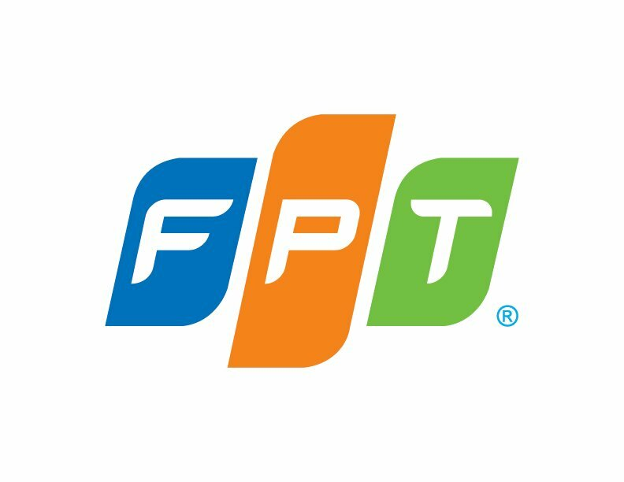
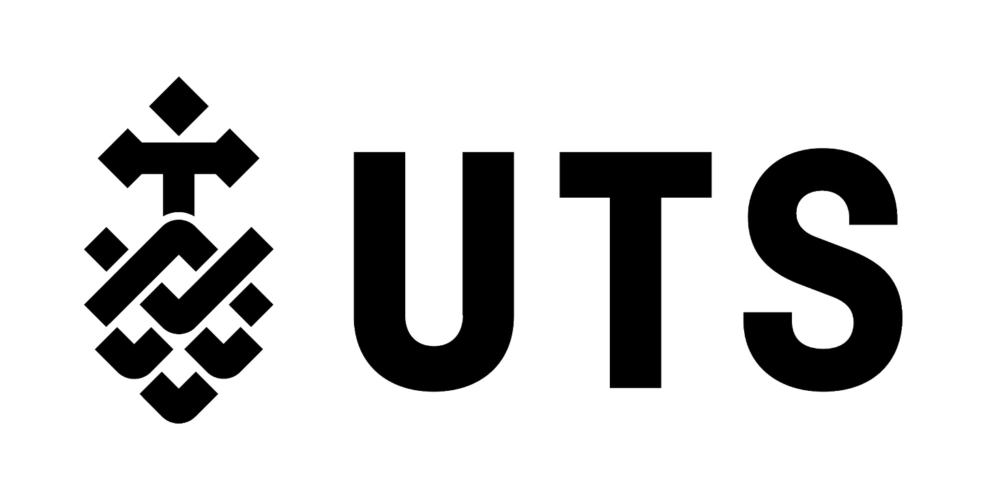

Melbourne, VIC
Software Engineer.
Hi, I'm Alex — an entry-level software engineer based in Melbourne, building full-stack and AI-powered applications. I care about clean architecture and documentation as much as the feature itself.
- Based in
- Melbourne, VIC
- Currently
- Monash University
- Education
- UTS — WAM 86
Capability
AI & RAG Systems
Self-hosted retrieval-augmented generation — document Q&A with cited, sourced answers, built on FastAPI and SurrealDB.
Capability
Full-Stack Development
React, Next.js, and Python end to end — from database schema to the last pixel of a responsive UI.
Capability
Workflow Automation
Automated pipelines for research, job search, and content — built with the WAT framework.
Skills
What I build with
Tools I reach for daily, and ones I'm sharpening.
Languages
- Python
- Java
- JavaScript
- SQL
Frameworks & Platforms
- React & Next.js
- FastAPI
- SurrealDB
- Docker
AI & Practices
- RAG systems
- Document processing pipelines
- Workflow automation (WAT framework)
- GitHub Copilot, Claude, Cursor
Coursework
Completed coursework
- Highlights
- Data Structures and Algorithms High Distinction · 100
- Cloud Computing and Software as a Service High Distinction · 99
- Routing and Switching Essentials High Distinction · 94
- Cryptography High Distinction · 94
- 2024 — Spring Session
- Communication for IT Professionals Credit · 73
- Cybersecurity High Distinction · 89
- Mobile Networking Credit · 74
- Routing and Switching Essentials High Distinction · 94
- 2025 — Autumn Session
- Cloud Computing and Software as a Service High Distinction · 99
- Data Structures and Algorithms High Distinction · 100
- Project Management and the Professional Distinction · 76
- Software Defined Networks High Distinction · 85
- 2025 — Spring Session
- Application Development with .NET High Distinction · 94
- Fundamentals of Interaction Design Distinction · 75
- Internetworking Project Distinction · 81
- Network Servers Pass · 62
- 2026 — Autumn Session
- Cryptography High Distinction · 94
- Introduction to Software Development High Distinction · 86
- Multilayer Switched Networks Distinction · 75
- TD: Transdisciplinary Action Lab Distinction · 81
Experience
Where I've worked
Software Engineering Intern

- Developed a self-hosted AI research assistant for local FPT employees, enabling document Q&A, cited answers, summaries, and summary-slide PDF generation — reducing manual document-review time by approximately 25%.
- Supported 7 source types and automated document research across 4 deployment environments using Next.js, FastAPI, SurrealDB, Ollama, and Docker.
- Maintained approximately 99.5% uptime during internal testing, supporting reliable access for local users.
Peer Mentor

- Mentored 30+ students across academic support, personal development, and career planning.
- Provided guidance on study strategies, time management, and professional development — helping 90% of students improve grades.
- Facilitated 100% of college events and mentoring activities to strengthen student engagement.
Selected Work
Projects
A handful of things I've built recently. Click through for the full write-up, code, and a live link.
Contact
Let's build
something
together.
Have a project in mind, an internship opening, or just want to talk shop? I'd love to hear from you.